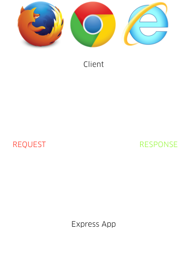
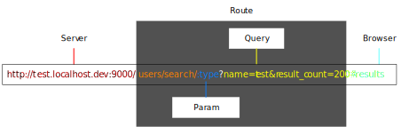

Server Side Scripting in 
Lesson 2
http://cmda.github.io/sss-course/lesson2
Today
- Templates
- URL
- Routes
- Routers
Templating
Not a good idea...
// app.js
// ...
app.get('/hello', function(req, res){
var output = '<html><head><title>HW</title></head><body>';
output += '<h1>Hello</h1>';
output += '<p>world!</p>';
output += '</body></html>';
res.send(output)
});
// ...
Templates
to put HTML in separate files
// app.js
// ...
app.get('/hello', function(req, res){
res.render('hello');
});
// app.js
var express = require('express');
var app = express();
app.set('view engine', 'ejs');
app.set('views', __dirname + '/views');
// Add a reponse
app.get('/hello', function(req, res){
res.render('hello');
});
// Start the server
app.listen(3000, function () {
console.log('Started!');
});
// Go to: http://IPADDRESS:3000/hello
Template file
<!-- hello.ejs -->
<html>
<head>
<title>HW</title>
</head>
<body>
<h1>Hello</h1>
<p>world!</p>
</body>
</html>
Template language
EJS: Embedded javascript
<!-- hello.ejs -->
<html>
<head>
<title>HW</title>
</head>
<body>
<h1>Hello</h1>
<p><%= name %></p>
<% if(location && location !== "") { %>
<p>How is the weather in <%= location %>?</p>
<% } %>
</body>
</html>
Passing data
Server
// app.js
router.get("/", function(req, res, next){
res.locals.name = "Dr. Evil";
res.locals.location = "Secret Lair";
res.render("index");
})
Template
<!-- index.ejs -->
Hello, <%= name %> from <%= location>
Not a good idea
<!-- hello.ejs -->
<html>
<head>
<title>HW</title>
</head>
<body>
<h1>Hello</h1>
<p><%= name %></p>
<% if(location && location !== "") { %>
<p>How is the weather in <%= location %>?</p>
<% } %>
</body>
</html>
Partials
<!-- hello.ejs -->
<%- include('head.ejs') %>
<h1>Hello</h1>
<p><%= name %></p>
<% if(location && location !== "") { %>
<p>How is the weather in <%= location %>?</p>
<% } %>
<%- include('foot.ejs') %>
<!-- head.ejs -->
<html>
<head>
<title>HW</title>
</head>
<body>
<!-- foot.ejs -->
</body>
</html>
Everything between
<% ... %> is just
JavaScript
Routes
Client <-> server
Response
through template
Request
through routing
What is a route?
A function that responds to part of an URL
// app.js
app.get('/hello', function(req, res){
// ...
});
URL

URL
Route
app.get('/hello/amsterdam', function(req, res){
res.locals.location = "Amsterdam";
res.render('hello');
});
Route + Query string
app.get('/hello', function(req, res){
res.locals.location = req.query.location;
res.render('hello');
});
Route + Parameter
app.get('/hello/:location', function(req, res){
res.locals.location = req.params.location;
res.render('hello');
});
Req / Res
app.get('/hello', function(req, res){
...
});
Request
req.params // Parameters
req.query // Query string
Response
res.send("...") // Send string
res.render("template", {..}) // Render template
Routers
Not a good idea
// app.js
app.get('/', function(req, res){ });
app.get('/cars', function(req, res){ });
app.get('/cars/:brand', function(req, res){ });
app.get('/weather', function(req, res){ });
app.get('/weather/:location', function(req, res){ });
Router
- Project structure (Modules!)
- URL structure
- Request handling
- Response generation
Router module
// routes/hello.js
var express = require('express');
var router = express.Router();
router.get('/hello', function(req, res){
res.send('... you say goodbye, and I say hello!');
});
module.exports = router;
Using the router
// app.js
var helloRouter = require('./routes/hello');
app.use('/hello', helloRouter);
Go to ...
http://localhost:3000/hello/hello
What happened?
- Start with the
app - /hello/hello →
app.use('/hello', helloRouter) - Continue in
router - /hello/hello →
router.get('/hello', ...)
Just /hello
// routes/hello.js
var express = require('express');
var router = express.Router();
router.get('/', function(req, res){
res.send('Hi!');
});
module.exports = router;
What happened?
- Start with the
app - /hello →
app.use('/hello', helloRouter) - Continue in
router - /hello →
router.get('/', ...)
Using multiple routers
// app.js
var helloRouter = require('./routes/hello');
var carRouter = require('./routes/cars');
app.use('/hello', helloRouter);
app.use('/cars', carRouter);
Wrapping up
What we learned today
- Templates
- Partials in templates
- Request / Response
- Routes: URL, params, query string
- Routers
Werkcollege en huiswerk
Zie moodle